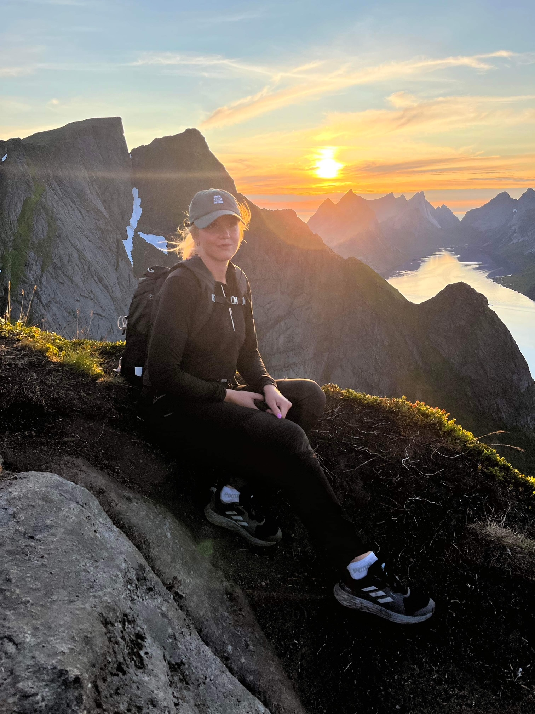
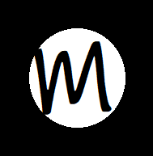

I am currently studying to become a Fullstack Developer in .NET. When graduated, I will have experience with Webdeveloping, SQL, SSMS, .NET, C#, Microsoft Azure, React, UX, CI/CD, HTML, CSS, JavaScript, Scrum, Agile , projectplaning and Git. In my previous roles, I excelled in service, sales, and marketing, including social media management, event planning, and project management. My passion for programming led me to pursue a career as a fullstack developer in IT. I am a driven, responsible, and goal-oriented individual with a positive and resilient attitude. I thrive in managing multiple tasks, leading projects from start to finish, and contributing effectively within a team. My commitment to customer satisfaction and team success has been a consistent theme throughout my career. Outside of work, my primary interest is football, a sport I've played since childhood. I am a dedicated team player, always ready to contribute. Additionally, I have diverse interests, including various sports as hockey and golf, fashion, computers, and music. When not on the field or coding, I enjoy spending time with family and friends.
Download My CV


Hello, i'm
Malin Nyberg
I'm studying to become a fullstack developer .NET
As I navigate the complexities of .NET, I'm evolving into a fullstack developer who bridges the gap between robust backend logic and intuitive frontend designs.
About Me